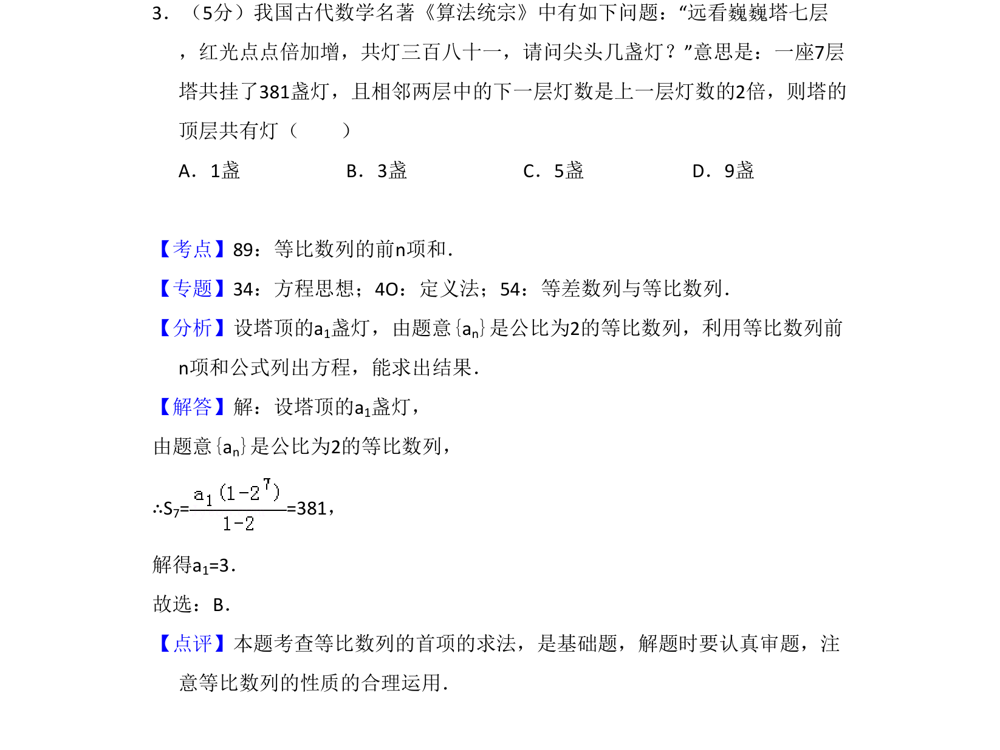
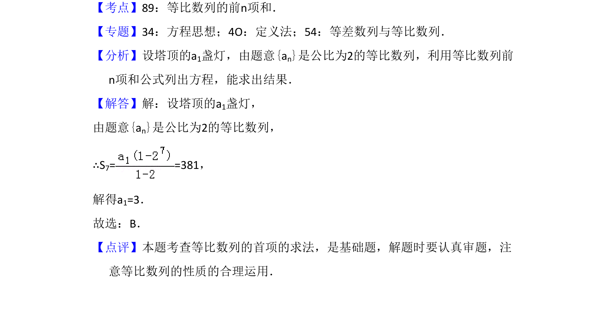

考点：等比数列 前n项和 方程思想

本题以古代数学问题为背景，考查等比数列前n项和公式的应用，通过建立方程求首项。

📄 原 PDF 第 2 页：
素材/真题/吉林/2008-2024·（吉林）数学高考真题/2017年高考数学试卷（理）（新课标Ⅱ）（解析卷）.pdf
3．（5分）我国古代数学名著《算法统宗》中有如下问题：“远看巍巍塔七层 ，红光点点倍加增，共灯三百八十一，请问尖头几盏灯？”意思是：一座7层 塔共挂了381盏灯，且相邻两层中的下一层灯数是上一层灯数的2倍，则塔的 顶层共有灯（ ） A．1盏B．3盏C．5盏D．9盏
【考点】89：等比数列的前n项和．菁优网版权所有 【专题】34：方程思想；4O：定义法；54：等差数列与等比数列． 【分析】设塔顶的a1盏灯，由题意{an}是公比为2的等比数列，利用等比数列前 n项和公式列出方程，能求出结果． 【解答】解：设塔顶的a1盏灯， 由题意{an}是公比为2的等比数列， ∴S7= =381， 解得a1=3． 故选：B． 【点评】本题考查等比数列的首项的求法，是基础题，解题时要认真审题，注 意等比数列的性质的合理运用．